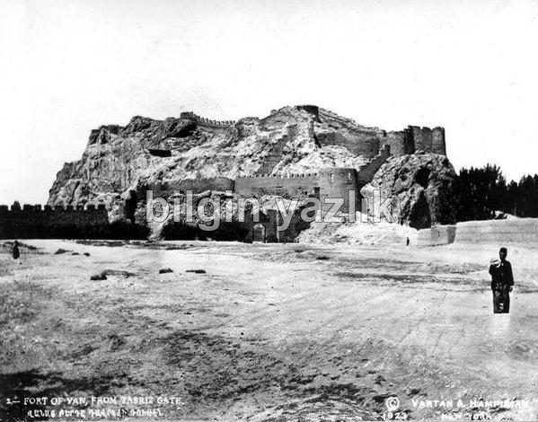
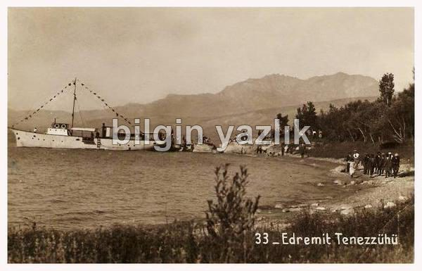

EVLİYÂ ÇELEBİ’NİN VAN SEHAYATİ
Van Kalesi, Van Gölü, Tatvan, Süphan Dağı, Erciş, Ahlat
Evliyâ Çelebi 1611 yılında İstanbul’da doğmuştur, vefat tarihi ise net olmamakla birlikte 1685 olarak kabul edilmektedir. Evliyâ Çelebi yarım asır boyunca gezip dolaştığı yerleri on ciltlik bir seyahatname olarak kayıt altına almıştır. Evliyâ Çelebi’nin on ciltlik seyahatnamesinin 4. cildinde 1655 yılında gerçekleştirdiği Van seyahati de yer almaktadır. Evliya Çelebi’nin Van seyahati sırasında gördüklerini yazdığı bu eser, 364 yıl önceki Van ve Van Gölü çevresindeki yaşama dair önemli ipuçları vermektedir. Ancak Evliya Çelebi’nin seyahatnameyi yazarken abartılarda bulunduğunu, cümleler kurarken bazen abartılı hayal gücünü kattığını da bir not olarak baştan eklemek isterim. Şimdi sizi Evliya Çelebi’nin Seyahatnamesi ile 364 yıl önceki Van Gölü ve çevresine götüreceğim:
Evliyâ Çelebi Van’a gerçekleştirdiği seyahatte Bitlis’ten geçmiştir. Bitlis’ten geçerken Van Gölü çevresinde yetişen ilginç meyve ve sebzelerden bahsetmektedir (kendi ağzından):
- Van diyarında Bohtan Kavunu vardır.
- Bitlis Hanı’nın saray bahçesinde hurma, cümmeyz (incir), muz, serv, limon ve turunç yetişirmiş, kışın üşümesinler diye keçeler ile sarılırlarmış.
Ayrıca Bitlis’in meşhur yiyecekleri arasında Işkın (Uçkun)’ı da saymaktadır. Bitlis’te Hurma, İncir, Muz, Limon gibi normal şartlar altında karasal iklimde yetişmeyecek türden meyvelerin yetiştirilmiş olması, kışın keçelerle sarılarak korunmuş olması açıkçası ilgi çekicidir.
Evliyâ Çelebi, seyahati sırasında içerisinden geçtiği Tatvan’dan da bahsetmektedir. Tatvan’ın o zaman Tahtıvan adını taşıdığını ve Van’ın subaşılığı olduğunu yazmaktadır. Tahtıvan’da Van Gölü’nden gidip gelen gemilerden bâc, gümrük ve öşr-i sultanî alındığını da ifade etmektedir.
Evliyâ Çelebi, Van’a doğru seyahat ederken, Tatvan’dan sonra Ahlat, Erciş istikametini Van Gölü kıyısından geçecek şekilde kullanmıştır. Bu yolculuk esnasında gördüklerini de bizlere aktarmıştır:
- Van Gölü zehir gibi tuzlu göldür.
- Van Gölü çevresinde toplam 9 kale bulunur.
- Van Gölü’nde iki büyük ada vardır birisi Ahtamar diğeri ise Ahdim-var adasıdır.
- Van Gölü’nün balıkları ortaya çıkıp bu Bend-i Mahî Deresi’nden yukarıya tam bir ay yüz binlerce küçük ve büyük türlü türlü balıklar geçerler. Fakat geri dönüşte ağ ile yolları kapatılırmış bu nedenle Bend-i Mahî denirmiş. Bütün halk balıkları toplar ve tuzlarlar.
- Van Gölünde toplam 50 parça gemi vardır.
- Van Gölü kenarında bir kaya üzerinde bir adam zincirler ile asılmıştır. Kemikleri kalmış, ne zincir ne de kemikler çürümemiş.
- Ahlat’ta çok büyük mağaralar vardır, bu mağaralarda 40-50 seneden beri yalnız yaşayan, hasır üstünde yatan, et ve sıcak yemek yemeyen nur yüzlü adamlar yaşar. Mağara içinden akan tatlı sular ile abdest alırlar, gündüz oruçlu gece ayakta geçirirler.
- Nemrud dağında, Nemrud’un adamlar develer ile taş taşırken Allah’ın emriyle yetmiş kadar deve yükleri gibi taş olmuştur, devecileri de tamamen taş olmuştur, bütün develer sıra sıra dizilmişlerdir. Kimi çökmüş, kimi ayakta durur, devecilerin de kimi ayakta kimi çökmüş durur, 3700 seneden beri bozulma olmadan kalmıştır, tamamı çakmak taşıdır.
- Ahlat dağlarında Kırmızı Zırnık (tüy dökücü), Sarı Zırnık (bakırı altınlaştırırmış) çıkar.
- Adilcevaz kalesi Ceviz gibi yuvarlak kaledir.
Evliyâ Çelebi, Süphan Dağı’ndan çok etkilenmiştir:
- Süphan Dağı’na Yahudi kavmi çıksa ödü patlayıp ölür. Van’da Süphan Dağı’na varasın diye deyim bile vardır Yahudiler arasında.
- Süphan Dağı’nda otlayan hayvanların çoğu ikişer kuzuludur.
- Süphan dağı yaylasında Moğol “Sücâh Nâm Bir Merd”in hurmesi (karısı) dokuz ay on günde bir batından bir saatte kırk tane evlat vücuda gelip yirmisi kız yirmisi oğlandır.
- Süphan Dağı’nda sırtlan, andık (çizgili sırtlan), kurt, tilki, çakal, kaplan yaşar ama asla yavruları olmaz.
- Süphan Dağı’nda kurt ile koyun yan yana gezer, birbirlerine zarar gelmez. Onun için bu dağda çobanlara rağbet yoktur.
- Süphan Dağı’nda cıynaklı (yırtıcı) kuşlar yavru vermezler ve durmazlar, fakat akbaba çoktur ve bin sene yaşarlar.
- Süphan Dağı’nda tavuklar her gün ikişer yumurta verirler.
- Süphan Dağı’nda ayn-ı çemen adlı bir zehirli su kaynağı vardır. Bu kaynak büyük bir gürültü ile doğar bir süre akar ve kaybolur. İçen hayvan ve insan ölür, etrafı kemiklerle doludur.
- Süphan dağı eteklerinden bir tuzlu çay akar, bu çay etrafında su ile taşlar oluşmuştur. Tahta sandıklar yaparlar, içine su koyarlar, bu suya da bu tuzdan bir miktar katarlar ve taş olur, daha sonra bunu bina yapımında kullanırlar.
Evliyâ Çelebi Van’a varmadan önce Erciş’e de uğramıştır. Erciş’te büyük bir liman bulunduğunu ve büyük bir kale bulunduğunu anlatmıştır.
Evliyâ Çelebi, seyahatnamesinde Van’a Rum dilinde Aleksandra denildiğini ifade etmektedir, Aleksandra ise aslında İskender demektir.
Evliyâ Çelebi, Van Kalesi’ni uzun uzun anlatmaktadır (kendi ağzından):
- Van Kalesi, Azerbaycan toprağında, Ermen diyarında güneyi, batısı ve kuzeyi Van Deryası, kıblesi, doğusu ve yıldız tarafı irem bağları, büyük sahranın ortasında yükünü yükleyip çökmüş bir deve gibi görünür. Arkası ise gökyüzüne çıkmış türlü türlü mavi, kızıl ve bukalemun nakşı ibret verici kayadır.
- Van Kalesi içinden Kırkçeşme Pınarı akarmış.
- Van Kalesi’ni yapan Kılıç Arslan Şahtır, sene 1131.
- Van Kalesi’nin kuzey tarafında Van Kalesi’ne bitişik bir sütun dağı gibi toprak yığılmış, bu toprak Timur tarafından 3 yılda sürülerek biriktirilmiştir.
- Van kalesi kayasına ilk yerleşenler âd kavmidir.
- Osmanlı döneminde Van kalesini ilk defa Hüsrev Paşa imar etmiştir.
- Van Kalesi’ne detaylı bakanlar bilir, kale üstünde birçok kaya aslan şeklinde görünür. Bundandır herhalde bütün Acem tarihçileri Van kalesine Kızıl Aslan derler.
- Van Kalesinde 600 adet büyük mağara vardır. Bu mağaralarda çok sayıda devdah-hane (ipek tellerini temizleyen işçilerin işliği) vardır.
- Kalenin bir mağarasında tuzlu balık ve et bulunur.
- Kalede kefere halk için de şarap vardır.
- Bir mağarada ise neft yağı madeni vardır, kayadan akıp büyük bir havuzun içine toplanır.
- Van kalesinde yedi adet havuz içerisinde sığır derisinin yünlerini ve camız derisinin kıllarını kazıyıp dilim dilim ve şilim şilim edip büyük havuzlara doldurup üzerine ağzına kadar bal dökmüşler, kimine pekmez dökmüşler, sığır ve camız deriliğinden iz kalmayıp bir tür güzel reçel olmuş ki insan yemekle doymaz.
- Van Kalesi’nde bakınca Edremit bağlarında düşman görülürse kırk mil deryasında gemiz gezdirmez toplar vardır.
- Van kalesi içerisinden Horhor suyu doğar, kalenin tepesinde horhor suyu kayasına bin basamak merdiven ile inilir.
Not: Tüm hakları saklıdır. İzinsiz kopyalanamaz, kullanılamaz. Yazarı Bilgin YAZLIK. 2019
KAYNAK:
Günümüz Türkçesiyle Evliya Çelebi Seyahatnamesi, 4. Kitap, Yapı Kredi Yayınları, Seyit Ali Kahraman, Yücel Dağlı, 2010.
Fotoğraflar: Natali Avazyan Arşivi.


Bu yazı taliyol arşivinden taşınmıştır. · özgün kayıt